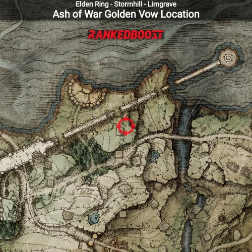

After getting the bloodhound fang pretty early on most enhancements is limited
HOWEVER, there is still a game changing AOW (Ash of War) available in the beginner area.
To get the Golden Vow Ash of War you need to go here on the map

BUT thats not the only enhancement available in the starting area... Technically. Fire Grant me Strength is a spell (buff) that is available behind Fort Gael in Caelid. Now as for the other enhancements such as different Talismans, Armors, Other Stackable Buffs and Smithing Stones are very limited to the beginner area so I left some YouTube videos down below for you to reference as your progression starts taking off.